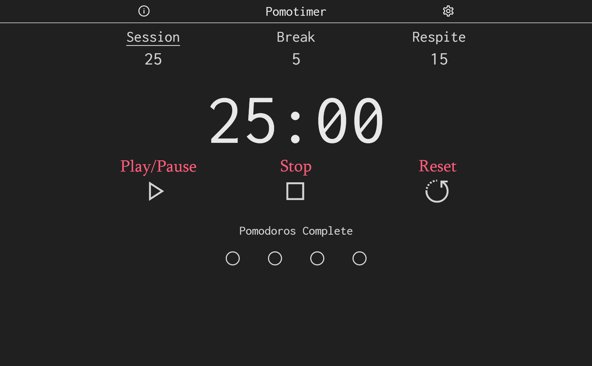

How To Use

Time
Options:
- Session - Work time. One finished session equals one complete pomodoro.
- Break - Short break before continuing with another session.
- Respite - Long break after four sessions (pomodoros) are complete.
Controls:
- Play/Pause - Play or pause the timer.
-
Stop - Reset the currently selected
time
(this
will not
reset
any
pomodoros).
-
Reset - Reset the timer, including all pomodoros.
Time Length:
Change time length in the settings.
What is the Pomodoro Technique?
The
Pomodoro Technique is a method to manage work time through work and break
intervals. Traditionally, the timer goes through four sessions of work (25 minutes),
three short breaks (5 minutes), and one long break (15 minutes). One pomodoro equals one
complete work session. After a work session a short break starts, and after four
pomodoros are complete, a long break starts. After that, the timer restarts fresh to the
beginning with no pomodoros complete, restarting the cycle. Its purpose is to build
discipline by enforcing sessions of work with no distractions and breaks to relax before
continuing with work.
Keyboard Controls
-
Controls
- SPACE - Play/Pause
- ALT + S - Stop (current time reset)
- ALT + R - Reset (current time & pomodoros reset)
-
Time Options
- ALT + P - Session
- ALT + B - Break
- ALT + L - Respite